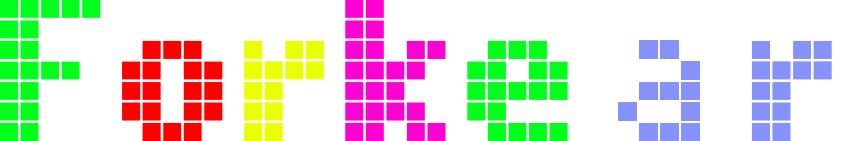

We make things happen.
Ver serviciosUn desarrollador. Múltiples capacidades.
Apps web, APIs REST, frontends reactivos y backends robustos adaptados a tu necesidad.
Sistemas, scripts y automatizaciones diseñadas específicamente para tu problema.
Firmware, dispositivos conectados, protocolos de red y arquitecturas M2M.
Smart contracts, tokens, wallets e integración con redes descentralizadas.
Pipelines de IA, modelos de lenguaje y orquestadores de agentes autónomos.
Arquitectura de sistemas, auditorías técnicas y asesoramiento estratégico IT.
Ya te está yendo bien. Sabés lo que querés, y por eso llegaste hasta acá.
Podríamos ser otra empresa de software más: resolver tickets, optimizar procesos, reducir costos. Lo hacemos, y lo hacemos bien.
Pero no nos quedamos ahí. Forkear tiene la capacidad de comprenderte a vos y a tu entorno. De darte el servicio que cualquiera puede darte, y además mostrarte lo que otros no ven.
Hay múltiples soluciones para cada problema. Y algunas de tus mayores oportunidades todavía no las estás viendo como tales — están disfrazadas de problemas que aún no notaste.
Somos Forkear. We make things happen.
/* fork(): un proceso que se bifurca
para ejecutar múltiples tareas en paralelo */
pid_t pid = fork();
if (pid == 0) {
exec_project(); /* tu problema */
find_opportunity(); /* lo que aún no viste */
} else {
wait_for_results(); /* directo, sin intermediarios */
}Proyectos seleccionados.
Plataforma de monitoreo en tiempo real para entornos industriales. Procesamiento de datos de sensores, alertas automáticas y dashboard de control con retención histórica.
Sistema de certificación de documentos sobre Ethereum. Contratos inteligentes para verificar autenticidad e integridad sin depender de terceros de confianza.
Sistema multi-agente que automatiza flujos de trabajo empresariales usando LLMs. Reduce tiempos operativos hasta un 70% en procesos repetitivos de alta complejidad.